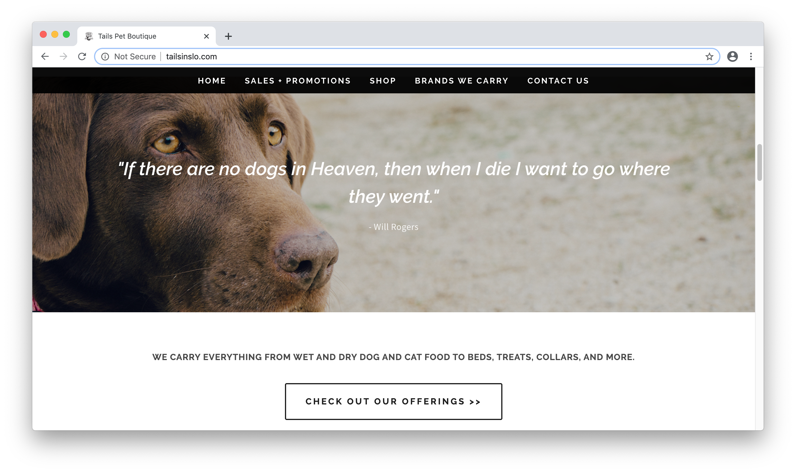

Final project proposal
Introduction
Furever Friends
A small, family-owned pet shop that sells food, toys, and acessories for cats and dogs. They also have cats and dogs up for adoption and a volunteer program open to those wanting to get involved.
Target audience
This site is used by cat/dog owners looking to purchase goods, people looking to adopt a cat/dog, people that are interested in getting involved with the store's volunteer program, and people looking to apply to work at the store.
The site visitors' goal is to find the products and/or information they need quickly and efficiently.
Comparative analysis
Tails Pet Boutique
The Wishbone Pet Company
Barkly and Meows

Website content
Home
Welcome to Furever Friends!
Looking to spoil your pet, add a furry friend to your family, work as a volunteer to keep our adoptable cats and dogs healthy and happy, or join our team? You've come to the right place!
[Images of volunteers with puppies and kittens, toys on the shelf, and a cashier helping a customer]
Shop
At Furever Friends, we make your pets our priority. We carry tons of healthy food options, safe toys, and adorable accessories to spoil your cat or dog!
[Images of happy pets eating food, playing with toys, and wearing cute accessories.]
Adopt
We have about a dozen cats and dogs waiting to become a part of your family! Meet your new potential furry friends!
[Images of adoptable cats and dogs.]
Join Our Team
Here at Furever Friends, we're all family! We have opportunities to join our team as an employee and as a volunteer!
[Image of volunteers working with cats and dogs; image of employee working with customer.]
Visit + Contact
Come visit us today! We're located in San Luis Obispo, CA at 2015 Santa Barbara Ave!
[Snapshot of map.]